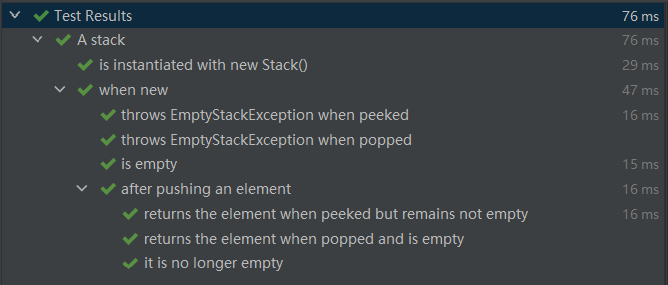
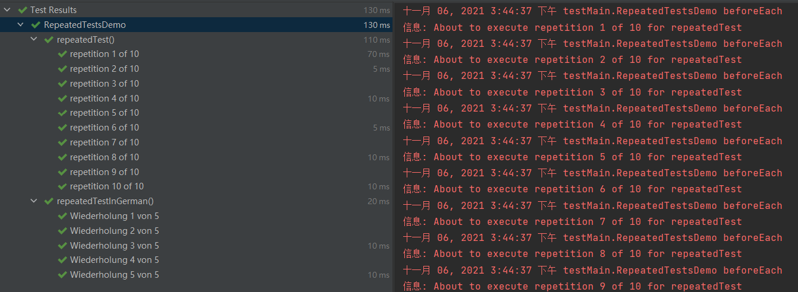

[TOC]
简介 JUnit 是一个 Java 语言的单元测试框架，目前已被主流平台集成。
JUnit 5 = JUnit Platform + JUnit Jupiter + JUnit Vintage
JUnit 5 在运行时要求 Java 8 以上，但仍然可以测试使用 JDK 的以前版本编译的代码。
maven 配置如下：
1 2 3 4 5 6 7 8 9 10 11 12 13 14 15 16 17 18 19 20 21 22 23 24 25 26 <dependencies > <dependency > <groupId > org.junit.jupiter</groupId > <artifactId > junit-jupiter</artifactId > <version > 5.8.1</version > <scope > test</scope > </dependency > <dependency > <groupId > org.testng</groupId > <artifactId > testng</artifactId > <version > 7.4.0</version > <scope > compile</scope > </dependency > <dependency > <groupId > org.junit.jupiter</groupId > <artifactId > junit-jupiter-api</artifactId > <version > 5.8.1</version > <scope > compile</scope > </dependency > <dependency > <groupId > org.junit.jupiter</groupId > <artifactId > junit-jupiter-params</artifactId > <version > 5.8.1</version > <scope > compile</scope > </dependency > </dependencies >
注解（Annotations） Junit5 所有支持的注解都在包 org.junit.jupiter.api 下。
注解
说明
@Test
表示方法是测试方法。这个注解不能声明任何属性。
@ParameterizedTest
表示方法是参数化测试。
@RepeatedTest
表示方法可以按照指定次数重复执行。
@TestFactory
表示方法是用于动态测试的测试工厂。
@TestTemplate
表示方法是为测试用例设计的模板，根据注册提供程序返回的调用上下文的数量进行多次调用。
@TestClassOrder
用于@Nested注解的测试类，可以配置测试类执行顺序。
@TestMethodOrder
用于为测试类配置测试方法执行顺序。
@TestInstance
用于为测试类配置测试实例生命周期。
@DisplayName
为测试类或测试方法声明自定义的显示名称。
@DisplayNameGeneration
为测试类声明一个自定义的显示名称生成器。
@BeforeEach
表示方法应该在当前类的每个@Test，@RepeatedTest，@ParameterizedTest或@TestFactory方法之前执行。
@AfterEach
表示方法应该在当前类的每个@Test，@RepeatedTest，@ParameterizedTest或@TestFactory方法之后执行。
@BeforeAll
表示方法应该在当前类的所有@Test，@RepeatedTest，@ParameterizedTest和@TestFactory方法之前执行。
@AfterAll
表示方法应该在当前类的所有@Test，@RepeatedTest，@ParameterizedTest和@TestFactory方法之后执行。
@Nested
表示一个非静态的嵌套测试类。除非使用“per-class”测试实例生命周期，否则@BeforeAll和@AfterAll方法不能直接在@Nested测试类中使用。
@Tag
在类或方法级别声明标签，用于过滤测试。
@Disabled
用于禁用测试类或测试方法。
@Timeout
用于测试方法、测试工厂、测试模板或生命周期方法，在其执行超过指定时间时失败。
@ExtendWith
用于注册自定义扩展。
@RegisterExtension
用于通过字段以编程方式注册扩展。
@TempDir
用于在生命周期方法或测试方法中通过字段注入或参数注入临时目录。
参数化测试 使用 @ParameterizedTest 注解代替 @Test，可以使用不同的参数多次运行同一个测试方法。但是必须至少声明一个参数源，然后在测试方法中使用这些参数。配合 @ParameterizedTest 使用的参数源注解如下：
注解
说明
@ValueSource
最简单的参数源。可以指定一个一维数组，并且在参数化测试时提供单个参数。
@NullSource
为参数化测试方法提供一个空参数，不能用于基本类型参数。
@EmptySource
为参数化测试方法提供一个空参数，用于以下类型的参数: java.lang.String, java.util.List, java.util.Set, java.util.Map, primitive arrays , object arrays，但是不支持它们的子类型。
@NullAndEmptySource
一个组合注释，结合了@NullSource和@EmptySource的功能。
@EnumSource
提供一种使用枚举常量的方便方法。
@MethodSource
可以引用测试类或外部类的一个或多个工厂方法。
@CsvSource
可以用逗号分隔的值来表达参数列表。通过value属性提供的每个字符串表示一个CSV行，并导致对参数化测试的一次调用。
@CsvFileSource
使用类路径或本地文件系统中 CSV 文件(逗号分隔的)作为参数源，文件中的每一行都会导致对参数化测试的一次调用。
@ArgumentsSource
用来指定一个自定义的、可重用的ArgumentsProvider（必须声明为顶级类或静态嵌套类）。
编写测试用例 测试类和方法 测试类（Test Class）是至少包含一个测试方法的任意顶级类、静态成员类或者 @Nested 注解的类。测试类不能是抽象的，且必须有一个构造函数。
测试方法（Test Method）是直接使用 @Test、@RepeatedTest、@ParameterizedTest、@TestFactory 或 @TestTemplate 或者使用这些注解组合的元注解的方法。
生命周期方法（Lifecycle Method）是任意被 @BeforeAll, @AfterAll, @BeforeEach 或 @AfterEach 注解的方法。
一个标准的测试类：
1 2 3 4 5 6 7 8 9 10 11 12 13 14 15 16 17 18 19 20 21 22 23 24 25 26 27 28 29 30 31 32 33 34 35 36 37 38 39 40 41 42 43 44 45 46 47 48 49 50 import static org.junit.jupiter.api.Assertions.fail;import static org.junit.jupiter.api.Assumptions.assumeTrue;import org.junit.jupiter.api.AfterAll;import org.junit.jupiter.api.AfterEach;import org.junit.jupiter.api.BeforeAll;import org.junit.jupiter.api.BeforeEach;import org.junit.jupiter.api.Disabled;import org.junit.jupiter.api.Test;class StandardTests @BeforeAll static void initAll () } @BeforeEach void init () } @Test void succeedingTest () } @Test void failingTest () fail("a failing test" ); } @Test @Disabled("for demonstration purposes") void skippedTest () } @Test void abortedTest () assumeTrue("abc" .contains("Z" )); fail("test should have been aborted" ); } @AfterEach void tearDown () } @AfterAll static void tearDownAll () } }
显示名称（Display Names） 测试类和测试方法可以声明自定义显示名称：带有空格、特殊字符甚至表情符号，由测试运行器和测试报告显示。
1 2 3 4 5 6 7 8 9 10 11 12 13 14 15 16 17 18 19 20 21 22 import org.junit.jupiter.api.DisplayName;import org.junit.jupiter.api.Test;@DisplayName("A special test case") class DisplayNameDemo @Test @DisplayName("Custom test name containing spaces") void testWithDisplayNameContainingSpaces () } @Test @DisplayName("╯°□°）╯") void testWithDisplayNameContainingSpecialCharacters () } @Test @DisplayName("😱") void testWithDisplayNameContainingEmoji () } }
还提供了两种方法自动生成展示名称：
@DisplayNameGeneration，将 value 设置为 ReplaceUnderscores 时，会把方法名的所有下划线替换为空格显示。
@IndicativeSentencesGeneration，测试类名+连接符+测试方法名，并且类名和方法名的下划线都会被替换成空格。
1 2 3 4 5 6 7 8 9 10 11 12 13 14 15 16 17 18 19 20 21 22 23 24 25 26 27 28 29 30 31 32 33 34 35 36 37 38 39 40 41 42 43 import org.junit.jupiter.api.DisplayName;import org.junit.jupiter.api.DisplayNameGeneration;import org.junit.jupiter.api.DisplayNameGenerator;import org.junit.jupiter.api.IndicativeSentencesGeneration;import org.junit.jupiter.api.Nested;import org.junit.jupiter.api.Test;import org.junit.jupiter.params.ParameterizedTest;import org.junit.jupiter.params.provider.ValueSource;class DisplayNameGeneratorDemo @Nested @DisplayNameGeneration(DisplayNameGenerator.ReplaceUnderscores.class) class A_year_is_not_supported @Test void if_it_is_zero () } @DisplayName("A negative value for year is not supported by the leap year computation.") @ParameterizedTest(name = "For example, year {0} is not supported.") @ValueSource(ints = { -1, -4 }) void if_it_is_negative (int year) } } @Nested @IndicativeSentencesGeneration(separator = " -> ", generator = DisplayNameGenerator.ReplaceUnderscores.class) class A_year_is_a_leap_year @Test void if_it_is_divisible_by_4_but_not_by_100 () } @ParameterizedTest(name = "Year {0} is a leap year.") @ValueSource(ints = { 2016, 2020, 2048 }) void if_it_is_one_of_the_following_years (int year) } } }
断言（Assertions） 1 2 3 4 5 6 7 8 9 10 11 12 13 14 15 16 17 18 19 20 21 22 23 24 25 26 27 28 29 30 31 32 33 34 35 36 37 38 39 40 41 42 43 44 45 46 47 48 49 50 51 52 53 54 55 56 57 58 59 60 61 62 63 64 65 66 67 68 69 70 71 72 73 74 75 76 77 78 79 80 81 82 83 84 85 86 87 88 89 90 91 92 93 94 95 96 97 98 99 100 101 102 103 104 105 106 107 108 109 110 111 112 113 114 115 116 117 118 119 120 121 122 123 124 125 126 127 128 129 130 131 132 133 134 135 136 137 138 139 140 141 142 143 144 145 146 147 148 149 150 151 152 153 154 155 156 import org.junit.jupiter.api.Test;import static java.time.Duration.ofMillis;import static java.time.Duration.ofMinutes;import static org.junit.jupiter.api.Assertions.assertAll;import static org.junit.jupiter.api.Assertions.assertEquals;import static org.junit.jupiter.api.Assertions.assertNotNull;import static org.junit.jupiter.api.Assertions.assertThrows;import static org.junit.jupiter.api.Assertions.assertTimeout;import static org.junit.jupiter.api.Assertions.assertTimeoutPreemptively;import static org.junit.jupiter.api.Assertions.assertTrue;class AssertTest @Test void standardAssertions () assertEquals(2 , 2 ); assertNotEquals(1 ,2 ); int [] arr1 = new int []{1 ,2 ,3 }; int [] arr2 = new int []{1 ,2 ,3 }; assertArrayEquals(arr1,arr2); Iterable<Integer> list1 = new ArrayList<>(Arrays.asList(1 ,2 ,3 ,4 )); Iterable<Integer> list2 = new ArrayList<>(Arrays.asList(1 ,2 ,4 ,3 )); assertIterableEquals(list1, list2); assertTrue('a' < 'b' ); } @Test void sameObject () String s1 = new String("abc" ); String s2 = new String("abc" ); assertNotSame(s1,s2); assertSame(s1,s2); } @Test void groupedAssertions () Person person = new Person().getDefaultPerson(); assertAll("person" , () -> assertEquals("John" , person.getFirstName()), () -> assertEquals("Doe" , person.getLastName()) ); } @Test void dependentAssertions () Person person = new Person().getDefaultPerson(); assertAll("properties" , () -> { String firstName = person.getFirstName(); assertNotNull(firstName); assertAll("first name" , () -> assertTrue(firstName.startsWith("J" )), () -> assertTrue(firstName.endsWith("n" )) ); }, () -> { String lastName = person.getLastName(); assertNull(lastName); assertAll("last name" , () -> assertTrue(lastName.startsWith("D" )), () -> assertTrue(lastName.endsWith("e" )) ); } ); } @Test void exceptionTesting () Throwable exception = assertThrows(IllegalArgumentException.class, () -> { throw new IllegalArgumentException("a message" ); }); assertEquals("a message" , exception.getMessage()); } @Test void timeoutNotExceeded () assertTimeout(ofMinutes(2 ), () -> { }); } @Test void timeoutNotExceededWithResult () String actualResult = assertTimeout(ofMinutes(2 ), () -> { return "a result" ; }); assertEquals("a result" , actualResult); } @Test void timeoutNotExceededWithMethod () String actualGreeting = assertTimeout(ofMinutes(2 ), AssertTest::greeting); assertEquals("Hello, World!" , actualGreeting); } @Test void timeoutExceeded () assertTimeout(ofMillis(10 ), () -> { Thread.sleep(100 ); }); } @Test void timeoutExceededWithPreemptiveTermination () assertTimeoutPreemptively(ofMillis(10 ), () -> { Thread.sleep(100 ); }); } private static String greeting () return "Hello, World!" ; } private class Person private String firstName; private String lastName; public Person () } public Person (String firstName, String lastName) this .firstName = firstName; this .lastName = lastName; } public String getFirstName () return firstName; } public String getLastName () return lastName; } public Person getDefaultPerson () return new Person("ryo" , "12222" ); } } }
支持 Kotlin 的断言 https://junit.org/junit5/docs/current/user-guide/#writing-tests-assertions-kotlin
第三方断言库 https://junit.org/junit5/docs/current/user-guide/#writing-tests-assertions-third-party
假设（Assumptions） 1 2 3 4 5 6 7 8 9 10 11 12 13 14 15 16 17 18 19 20 21 22 23 24 25 26 27 28 29 30 import static org.junit.jupiter.api.Assertions.assertEquals;import static org.junit.jupiter.api.Assumptions.assumeTrue;import static org.junit.jupiter.api.Assumptions.assumingThat;import org.junit.jupiter.api.Test;class AssumptionsDemo @Test void testOnlyOnWindowsNT () assumeTrue("Windows" .equals(System.getenv("OS" )), () -> "环境不匹配，当前环境:" + System.getenv("OS" )); } @Test void testInAllEnvironments () assumingThat("Windows_NT" .equals(System.getenv("OS" )), () -> { assertEquals(2 ,2 ); }); assertEquals("a" , "a" ); } }
禁用（Disabling Tests） 1 2 3 4 5 6 7 8 9 10 11 12 13 14 15 16 17 18 19 20 21 22 import org.junit.jupiter.api.Disabled;import org.junit.jupiter.api.Test;@Disabled class DisabledClassDemo @Test void testWillBeSkipped () } } class EnableClass @Test void test () } @Disabled @Test void testWillBeSkipped () } }
条件执行（Conditional Test Execution） 操作系统条件 1 2 3 4 5 6 7 8 9 10 11 12 13 14 15 16 17 18 19 20 21 22 23 24 25 26 27 28 29 30 31 32 33 34 35 36 37 38 39 40 import org.junit.jupiter.api.Test;import org.junit.jupiter.api.condition.DisabledOnOs;import org.junit.jupiter.api.condition.EnabledOnOs;import java.lang.annotation.*;import static org.junit.jupiter.api.condition.OS.LINUX;import static org.junit.jupiter.api.condition.OS.MAC;import static org.junit.jupiter.api.condition.OS.WINDOWS;class OperateSysCondition @Test @EnabledOnOs(WINDOWS) void onlyOnWindows () } @TestOnWin void testOnWin () } @Test @EnabledOnOs({ LINUX, MAC }) void onLinuxOrMac () } @Test @DisabledOnOs(WINDOWS) void notOnWindows () } @Target(ElementType.METHOD) @Retention(RetentionPolicy.RUNTIME) @Test @EnabledOnOs(WINDOWS) @interface TestOnWin { } }
Java 环境条件 1 2 3 4 5 6 7 8 9 10 11 12 13 14 15 16 17 18 19 20 21 22 23 24 25 26 27 28 import org.junit.jupiter.api.Test;import org.junit.jupiter.api.condition.DisabledOnJre;import org.junit.jupiter.api.condition.EnabledOnJre;import static org.junit.jupiter.api.condition.JRE.JAVA_10;import static org.junit.jupiter.api.condition.JRE.JAVA_8;import static org.junit.jupiter.api.condition.JRE.JAVA_9;class JRECondition @Test @EnabledOnJre(JAVA_8) void onlyOnJava8 () } @Test @EnabledOnJre({ JAVA_9, JAVA_10 }) void onJava9Or10 () } @Test @DisabledOnJre(JAVA_9) void notOnJava9 () } }
系统属性条件 系统属性 named 的值是否匹配 matches 的值，匹配就启用测试。
1 2 3 4 5 6 7 8 9 10 11 12 13 14 15 16 17 18 19 import org.junit.jupiter.api.Test;import org.junit.jupiter.api.condition.DisabledIfSystemProperty;import org.junit.jupiter.api.condition.EnabledIfSystemProperty;class SystemPropertyCondition @Test @EnabledIfSystemProperty(named = "java.vm.specification.version", matches = "1.8") void onlyOnVM1_8 () System.getProperties().forEach((k, v) -> System.out.println(k + " = " + v)); } @Test @DisabledIfSystemProperty(named = "java.vm.specification.version", matches = "1.8") void notOnVM1_8 () } }
环境变量条件 系统环境变量 named 的值是否匹配 matches 的值，匹配就启用测试。
1 2 3 4 5 6 7 8 9 10 11 12 13 14 15 16 17 18 import org.junit.jupiter.api.Test;import org.junit.jupiter.api.condition.DisabledIfEnvironmentVariable;import org.junit.jupiter.api.condition.EnabledIfEnvironmentVariable;class EnvVarCondition @Test @EnabledIfEnvironmentVariable(named = "OS", matches = "Windows_NT") void onlyOnWindowsNT () } @Test @DisabledIfEnvironmentVariable(named = "OS", matches = "Windows_NT") void notOnWindowsNT () } }
自定义条件 1 2 3 4 5 6 7 8 9 10 11 12 13 14 15 16 17 18 19 20 21 import org.junit.jupiter.api.Test;import org.junit.jupiter.api.condition.DisabledIf;import org.junit.jupiter.api.condition.EnabledIf;class CustomCondition @Test @EnabledIf("customCondition") void enabled () } @Test @DisabledIf("customCondition") void disabled () } boolean customCondition () return true ; } }
标签和过滤（Tagging and Filtering） 通过 @Tag 注释对测试类和方法进行标记，这些标记稍后可用于筛选测试发现和执行。
1 2 3 4 5 6 7 8 9 10 11 import org.junit.jupiter.api.Tag;import org.junit.jupiter.api.Test;@Tag("fast") @Tag("model") class TaggingDemo @Test @Tag("taxes") void testingTaxCalculation () } }
执行顺序（Test Execution Order）
方法排序
1 2 3 4 5 6 7 8 9 10 11 12 13 14 15 16 17 18 19 20 21 22 23 24 25 26 27 import org.junit.jupiter.api.MethodOrderer.OrderAnnotation;import org.junit.jupiter.api.Order;import org.junit.jupiter.api.Test;import org.junit.jupiter.api.TestMethodOrder;@TestMethodOrder(OrderAnnotation.class) class OrderedTestsDemo @Test @Order(1) void nullValues () } @Test @Order(2) void emptyValues () } @Test @Order(3) void validValues () } }
类排序
1 2 3 4 5 6 7 8 9 10 11 12 13 14 15 16 17 18 19 20 21 22 23 24 25 26 27 import org.junit.jupiter.api.ClassOrderer;import org.junit.jupiter.api.Nested;import org.junit.jupiter.api.Order;import org.junit.jupiter.api.Test;import org.junit.jupiter.api.TestClassOrder;@TestClassOrder(ClassOrderer.OrderAnnotation.class) class OrderedNestedTestClassesDemo @Nested @Order(1) class PrimaryTests @Test void test1 () } } @Nested @Order(2) class SecondaryTests @Test void test2 () } } }
内嵌测试（Nested Tests） 1 2 3 4 5 6 7 8 9 10 11 12 13 14 15 16 17 18 19 20 21 22 23 24 25 26 27 28 29 30 31 32 33 34 35 36 37 38 39 40 41 42 43 44 45 46 47 48 49 50 51 52 53 54 55 56 57 58 59 60 61 62 63 64 65 66 67 68 69 70 71 72 73 74 75 76 77 78 79 80 81 82 83 84 import static org.junit.jupiter.api.Assertions.assertEquals;import static org.junit.jupiter.api.Assertions.assertFalse;import static org.junit.jupiter.api.Assertions.assertThrows;import static org.junit.jupiter.api.Assertions.assertTrue;import java.util.EmptyStackException;import java.util.Stack;import org.junit.jupiter.api.BeforeEach;import org.junit.jupiter.api.DisplayName;import org.junit.jupiter.api.Nested;import org.junit.jupiter.api.Test;@DisplayName("A stack") class TestingAStackDemo Stack<Object> stack; @Test @DisplayName("is instantiated with new Stack()") void isInstantiatedWithNew () new Stack<>(); } @Nested @DisplayName("when new") class WhenNew @BeforeEach void createNewStack () stack = new Stack<>(); } @Test @DisplayName("is empty") void isEmpty () assertTrue(stack.isEmpty()); } @Test @DisplayName("throws EmptyStackException when popped") void throwsExceptionWhenPopped () assertThrows(EmptyStackException.class, stack::pop); } @Test @DisplayName("throws EmptyStackException when peeked") void throwsExceptionWhenPeeked () assertThrows(EmptyStackException.class, stack::peek); } @Nested @DisplayName("after pushing an element") class AfterPushing String anElement = "an element" ; @BeforeEach void pushAnElement () stack.push(anElement); } @Test @DisplayName("it is no longer empty") void isNotEmpty () assertFalse(stack.isEmpty()); } @Test @DisplayName("returns the element when popped and is empty") void returnElementWhenPopped () assertEquals(anElement, stack.pop()); assertTrue(stack.isEmpty()); } @Test @DisplayName("returns the element when peeked but remains not empty") void returnElementWhenPeeked () assertEquals(anElement, stack.peek()); assertFalse(stack.isEmpty()); } } } }
执行结果：

依赖注入（Dependency Injection for Constructors and Methods）
重复测试（Repeated Tests） 1 2 3 4 5 6 7 8 9 10 11 12 13 14 15 16 17 18 19 20 21 22 23 24 25 26 27 28 29 import org.junit.jupiter.api.BeforeEach;import org.junit.jupiter.api.RepeatedTest;import org.junit.jupiter.api.RepetitionInfo;import org.junit.jupiter.api.TestInfo;import java.util.logging.Logger;class RepeatedTestsDemo Logger logger = Logger.getLogger(RepeatedTestsDemo.class.getName()); @BeforeEach void beforeEach (TestInfo testInfo, RepetitionInfo repetitionInfo) int currentRepetition = repetitionInfo.getCurrentRepetition(); int totalRepetitions = repetitionInfo.getTotalRepetitions(); String methodName = testInfo.getTestMethod().get().getName(); logger.info(String.format("About to execute repetition %d of %d for %s" , currentRepetition, totalRepetitions, methodName)); } @RepeatedTest(10) void repeatedTest () } @RepeatedTest(value = 5, name = "Wiederholung {currentRepetition} von {totalRepetitions}") void repeatedTestInGerman () } }
执行结果：

参数化测试（Parameterized Tests）
@ValueSource，数组的方式，支持基本类型。
1 2 3 4 5 6 7 8 9 10 11 12 import static org.junit.jupiter.api.Assertions.*;import org.junit.jupiter.params.ParameterizedTest;import org.junit.jupiter.params.provider.ValueSource;class ParameterizedTestDemo @ParameterizedTest @ValueSource(ints = { 1, 2, 3 }) void testWithValueSource (int argument) assertTrue(argument > 0 && argument < 4 ); } }
@EnumSource，使用 Enum 常量，可以指定哪些常量被使用。
1 2 3 4 5 6 7 8 9 10 11 12 13 14 15 16 17 18 19 import static org.junit.jupiter.api.Assertions.*;import org.junit.jupiter.params.ParameterizedTest;import org.junit.jupiter.params.provider.EnumSource;import java.util.EnumSet;import java.util.concurrent.TimeUnit;class ParameterizedTestDemo @ParameterizedTest @EnumSource(TimeUnit.class) void testWithEnumSource (TimeUnit timeUnit) assertNotNull(timeUnit); } @ParameterizedTest @EnumSource(value = TimeUnit.class, names = {"DAYS", "HOURS"}) void testWithEnumSourceInclude (TimeUnit timeUnit) assertTrue(EnumSet.of(TimeUnit.DAYS, TimeUnit.HOURS).contains(timeUnit)); } }
@MethodSource，引用测试类或外部类的一个或多个工厂方法。工厂方法不能接受任何参数，
1 2 3 4 5 6 7 8 9 10 11 12 13 14 15 16 import static org.junit.jupiter.api.Assertions.*;import org.junit.jupiter.params.ParameterizedTest;import org.junit.jupiter.params.provider.MethodSource;import java.util.stream.Stream;class ParameterizedTestDemo @ParameterizedTest @MethodSource("stringProvider") void testWithSimpleMethodSource (String argument) assertNotNull(argument); } static Stream<String> stringProvider () return Stream.of("foo" , "bar" ); } }
多个参数需要返回参数实例的集合。
1 2 3 4 5 6 7 8 9 10 11 12 13 14 15 16 17 18 19 20 21 22 23 24 25 import static org.junit.jupiter.api.Assertions.*;import org.junit.jupiter.params.ParameterizedTest;import org.junit.jupiter.params.provider.Arguments;import org.junit.jupiter.params.provider.MethodSource;import java.util.Arrays;import java.util.List;import java.util.stream.Stream;class ParameterizedTestDemo @ParameterizedTest @MethodSource("stringIntAndListProvider") void testWithMultiArgMethodSource (String str, int num, List<String> list) assertEquals(3 , str.length()); assertTrue(num >=1 && num <=2 ); assertEquals(2 , list.size()); } static Stream<Arguments> stringIntAndListProvider () return Stream.of( Arguments.of("foo" , 1 , Arrays.asList("a" , "b" )), Arguments.of("bar" , 2 , Arrays.asList("x" , "y" )) ); } }
@CsvSource，将参数列表表示为逗号分隔的值。
1 2 3 4 5 6 @ParameterizedTest @CsvSource({ "foo, 1", "bar, 2", "'baz, qux', 3" }) void testWithCsvSource (String first, int second) assertNotNull(first); assertNotEquals(0 , second); }
@CsvFileSource，使用类路径中的 CSV 文件。CSV 文件中的每一行都会调用一次参数化测试。
1 2 3 4 5 6 @ParameterizedTest @CsvFileSource(resources = "/two-column.csv", numLinesToSkip = 1) void testWithCsvFileSource (String first, int second) assertNotNull(first); assertNotEquals(0 , second); }
自定义显示名称
1 2 3 4 5 @DisplayName("Display name of container") @ParameterizedTest(name = "{index} ==> first=''{0}'', second={1}") @CsvSource({ "foo, 1", "bar, 2", "'baz, qux', 3" }) void testWithCustomDisplayNames (String first, int second) }
测试模板（Test Templates） 根据注册提供程序返回的调用上下文的数量，多次调用它。
1 2 3 4 5 6 7 8 9 10 11 12 13 14 15 16 17 18 19 20 21 22 23 24 25 26 27 28 29 30 31 32 33 34 35 36 37 38 39 40 41 42 43 44 45 46 47 48 49 50 import org.junit.jupiter.api.extension.Extension;import org.junit.jupiter.api.extension.ExtensionContext;import org.junit.jupiter.api.extension.ParameterContext;import org.junit.jupiter.api.extension.ParameterResolver;import org.junit.jupiter.api.extension.TestTemplateInvocationContext;import org.junit.jupiter.api.extension.TestTemplateInvocationContextProvider;import java.util.Collections;import java.util.List;import java.util.stream.Stream;class MyTestTemplateInvocationContextProvider implements TestTemplateInvocationContextProvider { @Override public boolean supportsTestTemplate (ExtensionContext context) return true ; } @Override public Stream<TestTemplateInvocationContext> provideTestTemplateInvocationContexts (ExtensionContext context) return Stream.of(invocationContext("foo" ), invocationContext("bar" )); } private TestTemplateInvocationContext invocationContext (String parameter) return new TestTemplateInvocationContext() { @Override public String getDisplayName (int invocationIndex) return parameter; } @Override public List<Extension> getAdditionalExtensions () return Collections.singletonList(new ParameterResolver() { @Override public boolean supportsParameter (ParameterContext parameterContext, ExtensionContext extensionContext) return parameterContext.getParameter().getType().equals(String.class); } @Override public Object resolveParameter (ParameterContext parameterContext, ExtensionContext extensionContext) return parameter; } }); } }; } }
1 2 3 4 5 6 7 8 9 10 11 12 13 import org.junit.jupiter.api.TestTemplate;import org.junit.jupiter.api.extension.ExtendWith;import static org.junit.jupiter.api.Assertions.assertEquals;class TemplateTest @TestTemplate @ExtendWith(MyTestTemplateInvocationContextProvider.class) void testTemplate (String parameter) assertEquals(3 , parameter.length()); } }
参考资料：